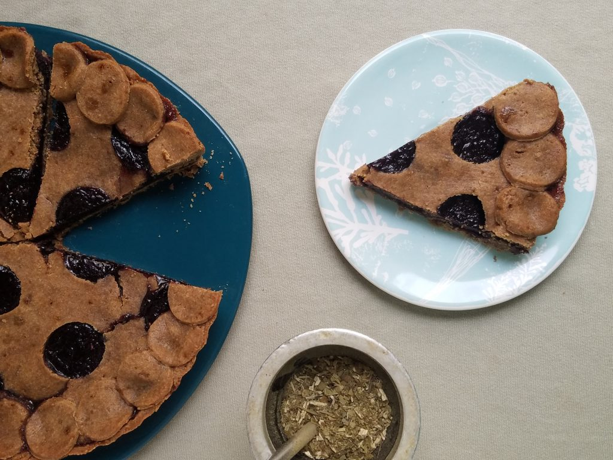

"Pasta Frola"
Recetas y fotos de Natalia Kiako
Aquí la página web de la autora

Ingredientes:
Masa tipo brisse
- 2 tazas de harina integral
- 2 huevos
- 3/4 taza de aceite de coco (el virgen le da un sabor a coco suave que como ya se sabe, pega genial con la pasta frola)
- 1 pizca de sal
- ½ taza de azúcar mascabo (para golosos intensos, 2/3 de taza)
- agua helada cantidad necesaria (poquita, o nada directamente)
- opcional: vainilla o canela
Para el relleno
- 300gr de dulce de membrillo
- dos o tres cucharadas de agua
Procedimiento:
Para la masa
Lo más importante antes de empezar es la temperatura del aceite de coco. Tiene que estar como la manteca pomada: blando, deshaciéndose al tacto, pero no caliente, ni líquido transparente. Si está muy duro, entibialo y dejalo recuperar temperatura ambiente antes de empezar.
Mezclar los ingredientes secos y agregar el huevo y el azúcar en el centro. Unir sin amasar demasiado. Incorporar el aceite de coco “pellizcando” con las yemas de los dedos, otra vez sin buscar amasar, no queremos darle calor a la masa con las palmas de nuestras manos. Una vez integrado, si hace falta, agregar de a poco agua helada hasta que la masa se forme, un bollo tierno, que se despega y no queda arenado, pero firme, bien consistente, plastilinoso.
Dejar reposar en frío un ratito antes de estirar (con palote o una botella o termo, seamos honestos) y reservar una parte para las “rejas” de a superficie de la frola, aprovechando este momento para cortarlos a cuchillo y dejar las tiritas ya preparadas. Forrar un molde de unos 18 cm con esta masa y reservar las tiras.
Para el relleno
Disolver a fuego muy bajo el dulce de arándanos (o el que elijas) cortado en cubos, agregando el agua. Si es dulce de membrillo a mí me gusta incorporarle un poquito de jugo de limón. Se puede facilitar el proceso con licuadora o minipimer, pero sino, con paciencia y tenedor se desmenuza sin problemas.
Dejar templar un poco (que no burbujee pero que tampoco se enfríe porque cuaja) y volcar sobre la masa. Cubrir con las tiritas reservadas y llevar a horno precalentado a 190 grados por 30 minutos, aproximadamente, o hasta que esté lista. Importante: Dejar enfriar antes de desmoldar o servir, el dulce caliente se pone cuasi líquido y podés generar desastres por ansiedad golosa.
Volver al indice